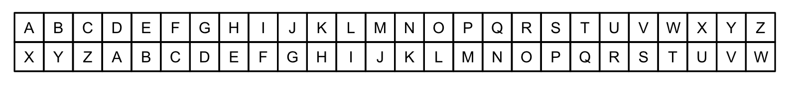
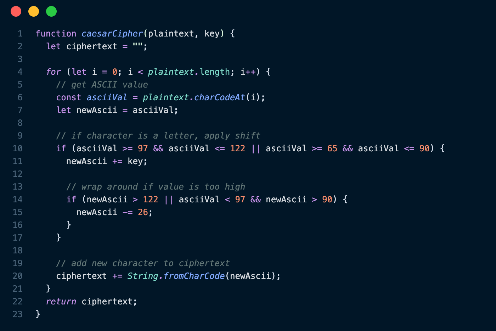
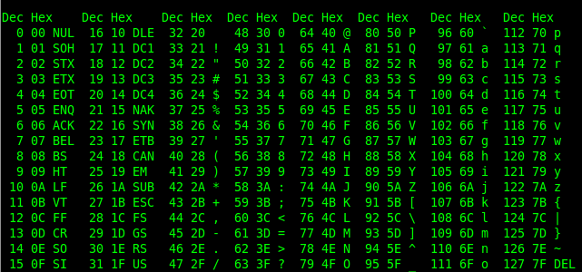

Caesar Cipher
Caesar Ciphers were an early form of cryptography used by Roman dictator Julius Caesar around 100 BC. He used this technique to
communicate military strategy to his generals without risking giving secrets away to his enemies. The Caesar Cipher would render a message
indecipherable to the naked eye, so that even his messengers wouldn't be able to understand it if they tried to betray him.
How It Works
The Caesar Cipher is a type of very simple substitution cipher. A substitution cipher is a cipher where each character or chunk of data
is substituted with a new character or chunk of data. In the case of the Caesar Cipher, this substitution is determined by shifting the
alphabet a certain number of places. Caesar used a leftward shift of 3, so let's use that as an example.

Figure 1: Example table for a Caesar Cipher substitution (key = 23).
Take a look at the table above. A Caesar Cipher would work by substituting each character in a message with the corresponding character
in the second row. Imagine Caesar wanted to tell his generals to "begin the invasion", but he wanted to take his enemies by surpise.
To prevent this message from tipping off the enemy, he would use his cipher to encrypt it. The new message would read "ybdfk qeb fksxpflk".
Now, if the message was intercepted, an enemy would not easily be able to figure out its meaning. But to anyone possessing the key, which is
the number of characters the message was shifted, the message code quickly be decoded and interpreted. Such a cipher could be broken in
a mere fraction of a second by modern computers by brute force, creating a need for more secure encryption techniques.
My Implementation
My Caesar Cipher algorithm works by iterating through each character in the input string to apply the substitution. If the character is
a letter (uppercase or lowercase), the shift is applied.

Figure 2: My algorithm

Figure 3: ASCII table used for converting characters to numbers